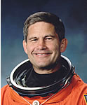

Lyndon B. Johnson Space Center
Houston, Texas 77058
|
National Aeronautics and Space Administration Lyndon B. Johnson Space Center Houston, Texas 77058 |
 |
Biographical Data |
||
PAUL S. LOCKHART (COLONEL, USAF, RET.)
NASA ASTRONAUT (FORMER)
PERSONAL DATA: Born April 28, 1956 in Amarillo, Texas, to Mr. and Mrs. Charles W. Lockhart. Married to the former Mary Theresa Germaine of Boston, Massachusetts. An avid outdoorsman, he enjoys hunting, fishing, and sports such as kayaking.
EDUCATION: Graduated from Tascosa High School, Amarillo, Texas, in 1974; received a bachelor of arts degree in mathematics from Texas Tech University in 1978, and a master of science degree in aerospace engineering from the University of Texas in 1981. Studied at the University of Innsbruck and the University of Vienna Summer School from 1978-79 on a Rotarian Fellowship. Has also completed aerospace related courses from Syracuse University and the University of Florida and is a recent graduate of the Royal College of Defence Studies, London, England.
ORGANIZATIONS: Society of Experimental Test Pilots, Order of Daedalians (Fraternal Order of Military Pilots).
AWARDS: Recipient of the Defense Superior Service Medal, Defense Meritorious Service Medal, Air Force Aerial Achievement Medal, Commendation Medal, Outstanding Unit Award with Valor, National Defense Service Medal, Achievement Medal, and numerous other service recognitions and ribbons. He is also a distinguished graduate of both ROTC and the Air Force Squadron Officer School.
EXPERIENCE: Lockhart was commissioned a 2nd Lieutenant in the USAF in 1981. Upon graduation from pilot training in 1983, he was assigned to the 49th Fighter Interceptor Squadron flying T-33s. In 1986, he transitioned to the F-4 and flew operationally with U.S. Air Forces, Europe (in Germany) from 1987-1990 as an instructor pilot for F-4 and F-16 aircrew in the tactics of surface-to-air missile suppression. In 1991 he reported to Edwards Air Force Base for year long training as a test pilot in high performance military aircraft. Upon graduation, he was assigned to the Test Wing at the Air Force Developmental Test Center at Eglin Air Force Base, Florida, performing weapons testing for the F-16 aircraft. During his 4-1/2 year tour at Eglin, he was selected as the Operations Officer for the 39th Flight Test Squadron. Much of America’s state-of-the-art weaponry was first tested under his guidance at the 39th Flight Test Squadron.
He has logged over 5,000 hours in more than 30 different aircraft and the Space Shuttle.
NASA EXPERIENCE: Selected by NASA in April 1996, Lockhart reported to the Johnson Space Center in August 1996. After completion of initial astronaut training, Lockhart was assigned to the Astronaut Office Spacecraft Systems/Operations Branch where he worked various technical issues including the Space Shuttle Main Engine (SSME) and redesign of the orbiter’s flight display. A veteran of two space flights, STS-111 (June 2002) and STS-113 (November 2002), Lockhart has logged 26 days, 39 minutes, and 82 seconds in space. Lockhart left NASA in January 2005 and returned to the Air Force. Post the Columbia accident, Col Lockhart attended the Royal College of Defence Studies (RCDS), London, England, as an exchange officer in fulfillment of Air War College. The Ministry of Defence’s premier institution for grooming senior leaders in the UK military and civil fields, Col Lockhart completed a year of Studies in International Conflict Resolution at RCDS with 84 other fellow members representing 44 nations from around the world. After graduation, he was assigned to the Air Staff, Headquarters USAF, Pentagon, where he has held the position of Director, Future Capabilities at the Air Forces Directorate of Studies and Analysis, Assessments, and Lessons Learned (HQAF/A9). Paul Lockhart retired from the Air Force in March 2007. From February 2007 through 2008 he served as Special Assistant, Program Management, Explorations Systems Mission Directorate, NASA Headquarters, Washington, D.C. and as Acting Division Director, Constellation Systems Division. Paul Lockhart now currently works in the private sector where he is the Senior Vice President for QinetiQ North America, a subsidiary of QinetiQ Inc., headquartered in London, England.
SPACE FLIGHT EXPERIENCE: STS-111 Endeavour (June 5-19, 2002). The STS-111 mission delivered a new ISS resident crew and a Canadian-built mobile base for the orbiting outpost’s robotic arm. The crew also performed late-notice repair of the station’s robot arm by replacing one of the arm’s joints. It was the second Space Shuttle mission dedicated to delivering research equipment to the space platform. STS-111 also brought home the Expedition-Four crew from their 6-1/2 month stay aboard the station. Mission duration was 13 days, 20 hours and 35 minutes. Unacceptable weather conditions in Florida necessitated a landing at Edwards Air Force Base, California.
STS-113 Endeavour (November 23-December 7, 2002) was the sixteenth Shuttle mission to visit the International Space Station. Mission accomplishments included the delivery of the Expedition-Six crew, the delivery, installation and activation of the P1 Truss, and the transfer of cargo from Shuttle to the Station. During the mission Lockhart coordinated spacewalk activities. STS-113 brought home the Expedition-Five crew from their 6-month stay aboard the Station. Mission duration 330 hours and 47 minutes.
OCTOBER 2009